सुविकल्प: Mine Repurposing Tool
Select factors and sub-factors to discover suitable repurposing options for your mining site
![Coal Controller Organisation emblem]()
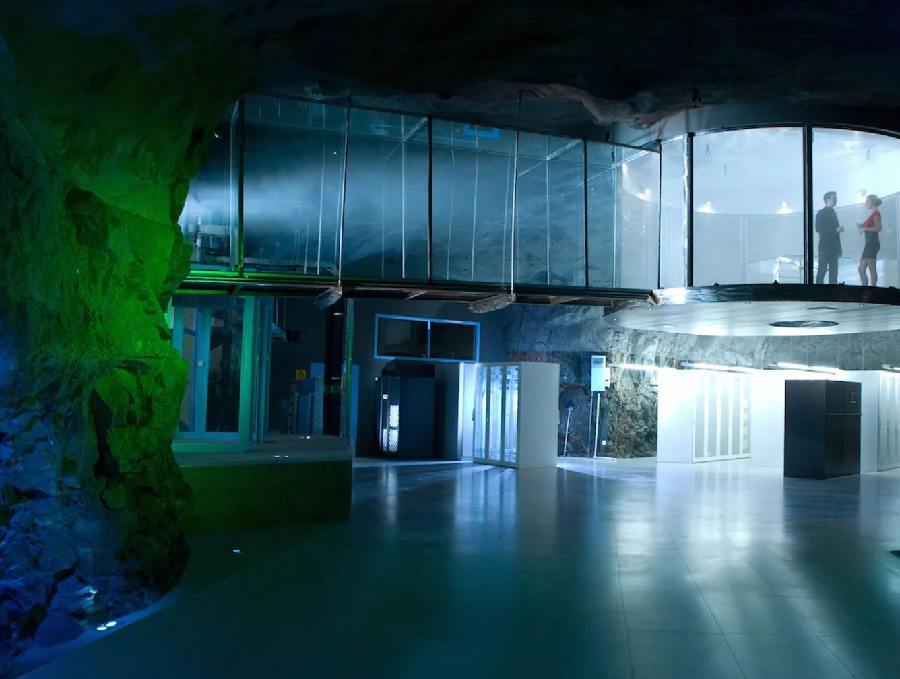
Data centres are specialized facilities designed to store, process, and manage digital information, forming the backbone of modern digital infrastructure and services. In the context of post-mining landscapes, reclaimed land offers a strategic opportunity for establishing data centres due to the availability of large land parcels and potential access to power and connectivity infrastructure, enabling the transformation of previously degraded areas into high-value technology hubs that support digital and economic growth.
The development of data centres in such regions can create skilled employment opportunities for local communities, particularly those transitioning from mining-based livelihoods, by generating roles in operations, maintenance, security, and technical services. However, successful implementation requires addressing key challenges, including ensuring reliable power supply, efficient cooling systems, robust connectivity, environmental sustainability, and adherence to data security and regulatory standards to ensure long-term viability and operational efficiency.
A data centre is a capital-intensive, infrastructure-led, operator-driven repurposing option — transforming degraded mine land into high-value digital infrastructure. Sites must satisfy critical requirements for power, fiber, cooling, geotechnical stability, and security.
This concept proposes the development of a Data Centre / Digital Infrastructure Campus within a closed, reclaimed, or repurposed coal mine area. The objective is to transform suitable mine land into a high-value digital infrastructure use that supports regional diversification, productive reuse, skilled employment, and long-term lease/concession revenue.
The project may include: data hall buildings / modular white-space blocks, disaster-recovery / backup modules, edge / regional cloud infrastructure blocks, AI / HPC-ready compute blocks, NOC/SOC facilities, substations and redundant electrical systems, cooling plant, telecom and fiber infrastructure, warehousing and logistics support, renewable-energy integration, and BESS.
For data centres, reliability and operational sustainability matter more than mere land availability. Power, connectivity, disaster risk, water/cooling strategy, and operating capability are decisive factors.
A data centre can be a strong repurposing option where a closed coal mine site offers a combination of:
The first RFP should not go out until power, fiber, land status, and geotechnical suitability are reasonably established — those are the biggest project killers.
The following matrix provides a structured checklist for assessing the suitability of the proposed site for the selected repurposing option. It identifies the key physical, technical, environmental, infrastructure, legal, and owner-side readiness parameters that should be reviewed before the project is advanced to the next stage of development. The purpose of this matrix is to help the project owner understand existing site conditions, technical requirements, potential constraints, and preparatory actions required before feasibility studies, approvals, or tendering are initiated.
| Main Category | Sub-category | What to Assess / Prepare | Why it Matters | Owner Readiness Before Tender |
|---|---|---|---|---|
| Land / Area | Total land area | Gross area, usable area, exclusion zones, buffers, expansion land | Determines campus scale, substation space, cooling plant, security setbacks, future modules | Land map and usable-area estimate |
| Land contiguity | Fragmentation, encumbrances, internal barriers | Data centres prefer integrated secure campuses | Parcel continuity note | |
| Topography / grading | Slope, cut-fill need, flood-safe platform levels | Affects campus planning, drainage, build cost | Topographic survey | |
| Ground condition | Bearing capacity, settlement, reclaimed-fill quality, subsidence history | Critical for heavy critical infrastructure and uptime risk | Geotechnical and subsidence investigation | |
| Drainage / flood safety | Stormwater path, flood levels, ponding, climate risk | Essential for resiliency and insurance acceptability | Drainage and flood-risk assessment | |
| Site Context | Power proximity | Existing substations, transmission lines, evacuation capacity | Power is the primary siting factor | Power-infrastructure note |
| Fiber proximity | Trunk routes, telecom backhaul, route diversity | Essential for latency, resilience, tenant attractiveness | Fiber-connectivity feasibility note | |
| Access | Road width, last-mile logistics, equipment delivery route | Needed for construction and O&M logistics | Access/logistics note | |
| Security context | Perimeter control, surrounding land use, intrusion risk | Data centres require strong physical security | Security context note | |
| Functional Planning | IT load potential | Initial MW, scalable MW, phasing potential | Determines business model and investor class | Preliminary demand and utility estimate |
| Campus type | Edge, enterprise, colocation, DR, AI/HPC | Clarifies project strategy | Functional concept brief | |
| Phasing | Modular development blocks | Improves bankability and reduces first-phase risk | Phasing concept | |
| Power & Utilities | Grid reliability | Source redundancy, outage history, power quality | Core bankability issue | Utility reliability assessment |
| Substation strategy | Dedicated GIS/AIS, N+1/2N logic, backup systems | Critical for uptime design | Electrical concept note | |
| Cooling strategy | Air, hybrid, liquid, recycled-water option | Directly affects viability and water footprint | Cooling strategy note | |
| Water availability | Potable / industrial / treated wastewater / reuse | Important for cooling and service use | Water feasibility note | |
| Digital infra | Fiber route diversity, carrier access, meet-me rooms | Critical for service competitiveness | Telecom feasibility note | |
| Legal / Approvals | Land rights | Ownership, transferability, leaseability, land-use permissibility | Fundamental before procurement | Land-rights note |
| Mine closure status | Closure / reclamation / post-mining permissibility | Determines whether development can proceed | Closure linkage note | |
| Building / electrical / telecom approvals | Local body, electrical inspectorate, fire, environmental, digital infra-approvals | Required for lawful operation | Approval pathway note |
The following matrix presents an indicative relationship between available site area, project scale, technical configuration, and likely development potential. It is intended to support preliminary planning by helping the project owner identify the appropriate scale and configuration for the proposed repurposing option. The values and recommendations are indicative and should be refined through detailed feasibility studies, site surveys, engineering assessments, and relevant technical and commercial evaluations.
| Land Area | Recommended Scale | Likely Configuration | Typical Use Case | Special Considerations |
|---|---|---|---|---|
| 2–5 ha | Small modular campus | Edge / DR node — 1–2 data hall blocks, utility yard, admin, security | DR, enterprise backup, regional compute | Works only if power and fibre are already close |
| 5–10 ha | Small to medium campus | Modular halls, dedicated substation, cooling plant, NOC/SOC | Enterprise hosting, government cloud support, colocation | Good for phased development |
| 10–25 ha | Medium campus | Multiple halls, utility backbone, phased modules, service buildings | Colocation, cloud, enterprise park | Needs strong land stability and utility planning |
| 25–50 ha | Large campus | Expandable data-centre park with substation and multiple phases | Large colocation / cloud park | Suitable only with strong power and fiber corridor |
| 50 ha+ | Flagship campus | Multi-phase campus, large substations, advanced cooling, renewable integration | Hyperscale / AI / cloud | Suitable only in rare, highly advantaged sites |
Seven implementation models are available for data centre development. The most relevant balance technical reliability, specialised operations capability, commercial viability, and long-term operational sustainability. Concession, DBFOT, and Hybrid are the preferred routes.
The following table outlines the possible implementation models that may be considered for developing the proposed repurposing project. These models differ in terms of ownership structure, funding responsibility, private sector participation, operational control, and long-term risk allocation. The purpose of this table is to help the project owner compare broad development routes and select an implementation approach that aligns with its financial capacity, institutional preference, risk appetite, and long-term asset management objectives.
| Group | Model | Core Feature | Broad Suitability |
|---|---|---|---|
| Owner-led | EPC | Owner funds, develops, and retains full ownership; contractor designs and constructs | Suitable where owner wants full control, has sufficient funding capacity, and separately arranges specialist operations |
| Owner-led | EPC + O&M / FM | Owner funds and owns; specialist agencies handle operations, maintenance, FM, uptime compliance, utilities, and security | Suitable where strategic control is important but owner does not want to manage daily technical operations directly |
| Developer / PPP | BOOT | Private developer finances, builds, owns, and operates during concession period then transfers back | Suitable where owner wants to reduce upfront capital burden and bring in private expertise with eventual transfer |
| Developer / PPP | BOO | Private developer finances, develops, owns, and operates without mandatory transfer | Suitable only where long-term private ownership is acceptable and project functions as sustained private digital business |
| Developer / PPP | DBFOT | Private concessionaire designs, builds, finances, operates, and transfers under structured PPP | Suitable for larger / more complex projects requiring private finance, specialized design and operations, and eventual transfer |
| Developer / PPP | Concession / Lease-Operate-Develop | Owner provides land and development rights; concessionaire develops, upgrades, operates, and commercialises | Often very suitable — owner retains land control while specialist operator develops, expands, and commercially runs the campus |
| Mixed | Hybrid | Owner supports land, enabling infrastructure, power connectivity, or shell; private parties invest in fit-out, systems, operations, tenanting | Particularly suitable where project has strategic public value but requires private technical expertise, commercial discipline, and shared-risk structuring |
The following comparative assessment evaluates the major implementation models across key decision parameters such as investment requirement, ownership control, financing responsibility, contractual complexity, risk transfer, and long-term economic benefit. This matrix is intended to support early-stage decision-making by highlighting the relative strengths and limitations of each model. The final choice of model should be guided by the specific circumstances of the project, including its scale, commercial viability, applicable policy framework, and the owner's institutional preference.
| Evaluation Parameter | EPC | EPC + O&M | BOOT | DBFOT | Concession | Hybrid |
|---|---|---|---|---|---|---|
| Upfront investment by Mine Owner | High | High | Low–Moderate | Low–Moderate | Low–Moderate | Varies |
| Need for specialized technical operations expertise | High | Very High | Very High | Very High | Very High | Very High |
| Suitability for strategic / critical infrastructure objectives | High | Very High | High if protected | High if safeguarded | High if protected | Very High |
| Suitability for commercial / tenant-driven development | Moderate | High | High | Very High | Very High | High |
| Suitability for phased / modular expansion | Moderate | High | Moderate–High | High | Very High | Very High |
| Local employment and service ecosystem | Moderate–High | High | High | High | High–Very High | Very High |
| Overall suitability for mine-area data centre | Moderate | High | High | Very High | Very High | Very High |
The following table explains how major project responsibilities are typically allocated under different implementation models. It covers key functional areas such as site availability, financing, design and construction, regulatory approvals, operation and maintenance, revenue collection, asset ownership, and end-of-term transfer. This helps clarify the respective roles of the project owner, private developer, EPC contractor, operator, or concessionaire, and supports the preparation of tender documents and contractual structures.
| Responsibility Area | EPC | EPC + O&M | BOOT / DBFOT | Concession / LDO | Hybrid |
|---|---|---|---|---|---|
| Financing | Owner | Owner | Private developer | Private concessionaire | Shared / variable |
| Electrical, Mechanical, Cooling, Utility Infrastructure | Owner-defined, contractor-executed | Owner-defined with operator input | Developer | Concessionaire / developer | Shared |
| IT Fit-out / Server Hall Infrastructure | Owner-defined | Owner-defined with operator input | Developer / operator | Concessionaire / operator | Shared |
| Telecom / Fiber / Network Infrastructure | Owner-defined | Owner-defined with operator input | Developer / operator | Concessionaire / operator | Shared |
| Operations | Owner | Specialist operator / FM agency | Developer during concession | Concessionaire / operator | Shared |
| Customer / Tenant Management | Owner | Owner or specialist operator | Developer / operator | Concessionaire / operator | Shared |
| Security / Access Control / Surveillance | Owner | Owner or specialist FM agency | Developer / operator | Concessionaire / operator | Shared |
| Local Employment / Vendor Inclusion | Owner-controlled | Owner-controlled with operator support | Contract-based | Contract-based; built into concession terms | Strongly configurable |
| Transfer at End of Term | No | No | Yes | As agreed | As agreed |
Data centre revenue streams include rack rentals, colocation fees, enterprise hosting, managed services, disaster-recovery services, connectivity charges, utility recovery, and where applicable, AI/HPC hosting and cloud services.
The following table presents the broad funding logic for each implementation model. It explains who is expected to finance the project, the level of owner-side funding requirement, and the commercial rationale behind each structure. This section is intended to help the project owner assess whether the project is more suitable for owner-funded development, private investment, public-private partnership, lease or concession structure, or a hybrid funding arrangement.
| Model | Primary Funding Source | Owner Funding Requirement | Commercial Logic |
|---|---|---|---|
| EPC | Owner's budget, institutional support, grants, debt raised by owner | High | Owner directly finances and develops the campus, retains full ownership and long-term strategic, operational, and commercial benefits |
| EPC + O&M | Owner's budget; O&M funded through annual budget or operating revenue | High | Owner finances and retains ownership while specialist agencies handle operations, maintenance, FM, uptime, security, and utilities management |
| BOOT | Private developer equity, project finance, external debt, viability-gap support | Low–Moderate | Developer finances, builds, owns, and operates during concession; recovers investment through rack rentals, colocation, managed services, and connectivity charges before transfer |
| BOO | Private developer equity, private debt, strategic investors, infrastructure funds | Low | Developer finances and retains continuing revenue rights; owner benefit through lease rent, land value, or negotiated commercial returns |
| DBFOT | Private concessionaire equity, project finance, debt, public support / VGF | Low–Moderate | Private party designs, builds, finances, operates, and transfers; investment recovery through colocation, managed hosting, DR services, connectivity, and utility charges |
| Concession / LDO | Private concessionaire investment, lease-based development finance, partial owner-side enabling support | Low–Moderate | Owner provides land and development rights; concessionaire invests in upgrading, operating, and commercialising; owner benefits through concession fees, lease rentals, and revenue share |
| Hybrid | Shared funding from owner, public authority, infrastructure support, grants, and private investment | Variable | Owner may fund land development, enabling infrastructure, substations, or shell; private partners fund technical fit-outs, electrical/mechanical systems, server halls, operations, and commercialisation |
The following table explains how revenue may be generated under different implementation models and identifies who is likely to receive the principal project income. It also describes the nature and extent of the financial benefit available to the project owner, whether through direct project revenue, cost savings, lease income, concession fees, revenue sharing, service charges, or eventual asset transfer. This comparison is intended to support the selection of a commercially appropriate model for the proposed repurposing project.
| Model | How Revenue is Generated | Owner's Financial Benefit |
|---|---|---|
| EPC | Direct owner-led operation: rack rentals, colocation fees, enterprise hosting, managed services, DR services, connectivity charges, utility recovery | Full financial benefit from all revenues; owner bears full CAPEX, operating responsibility, utilisation risk, and technology-upgradation burden |
| EPC + O&M | Colocation income, rack rentals, wholesale capacity leasing, managed hosting, DR services, connectivity charges, utility recovery — net of O&M agency payments | High — owner retains core revenue rights and asset ownership while paying specialist agencies for operations and tenant-support services |
| BOOT | Developer earns through rack rentals, tenant leasing, colocation charges, managed services, DR services, connectivity, utility recovery during concession | Generally indirect or deferred — through lease rent, concession fee, revenue share, and eventual asset transfer at end of concession |
| Concession / LDO | Concessionaire earns through rack leasing, wholesale capacity, enterprise hosting, DR services, connectivity charges, utility recovery, and related digital-infrastructure services | Lease rentals, concession fee, revenue share, and enhanced land value — owner benefits more from land appreciation than direct revenue |
| Hybrid | Combination of strategic hosting, tenant leasing, colocation income, managed services, connectivity charges, utility recovery, and shared commercial income | Variable to high — depends on allocation of ownership, revenue rights, public support, operator role, and commercial terms |
The following table assesses the likely local livelihood and employment potential of each implementation model. It considers the extent to which each model can support construction-phase jobs, long-term operational employment, local procurement opportunities, skill development, community participation, and associated support services. This section is particularly relevant where the repurposing project is expected to contribute to post-mining or post-operational economic transition and sustained local community benefit.
| Model | Local Job Potential | Why |
|---|---|---|
| EPC | Moderate–High | Substantial construction employment in civil works, electrical, cooling, security, and site development; long-term impact depends on localisation of operations |
| EPC + O&M | High | Sustained jobs in operations, maintenance, security, housekeeping, utilities management, logistics, and support services — local hiring can be directly controlled |
| BOOT | High | Both construction and operational employment during concession; strong if agreement mandates local hiring, training of local youth in electrical, cooling, security, and FM roles |
| DBFOT | High–Very High | Local hiring, training, apprenticeship, vendor participation, and skill-development obligations can be built into concession conditions more clearly than looser private arrangements |
| Concession / LDO | High–Very High | Direct and indirect employment through construction, security, housekeeping, maintenance, power and cooling support, logistics, and vendor ecosystems — requires strong concession terms |
| Hybrid | Very High | Explicit provisions for local youth training, contractor participation, service vendors, security, maintenance, logistics, and community-linked employment opportunities |
The following combined comparison brings together three important dimensions of project structuring: revenue potential, owner-side financial benefit, and local livelihood generation. It provides a consolidated view of how each implementation model performs across commercial, institutional, and community-development perspectives. This matrix is intended to support balanced decision-making where the objective extends beyond financial return to include sustainable site reuse and long-term local economic benefit.
| Model | Owner Profitability | Local Job Creation | Overall Comment |
|---|---|---|---|
| EPC | High | Moderate–High | Suitable where owner has funding capacity, wants full control, and can separately arrange specialist technical operations |
| EPC + O&M | High | High | One of the more suitable models combining ownership, strategic control, specialist technical operation, and sustained local livelihood |
| BOOT | Moderate | High | Suitable where owner wants to reduce upfront capital exposure while enabling long-term strategic use with eventual transfer |
| DBFOT | Moderate–High | High–Very High | One of the strongest PPP options — strategic infrastructure asset with professional private development, operation, and eventual transfer |
| Concession / LDO | Moderate | High–Very High | Very suitable where owner retains land control but outsources specialist development, operations, and commercialisation to an experienced operator |
| Hybrid | Variable–High | Very High | Highly suitable where project has both strategic infrastructure value and regional development objectives — flexible structure combining public oversight and private efficiency |
Before issuing the first RFP, the mine owner must establish power, fiber, land status, and geotechnical suitability. These are the biggest project killers if not resolved pre-tender. Model-wise responsibility must be clearly defined to protect uptime, security, and local livelihood obligations.
The following section identifies the key owner-side preparatory actions that should ideally be completed before issuing the first Request for Proposal. These actions are aimed at reducing uncertainty for prospective bidders, improving project bankability, clarifying site availability, identifying approval pathways and risks, and defining the technical and commercial scope of the project. Completing these preparatory steps before tendering can improve bid quality, attract credible responses, and reduce the risk of delays during project implementation.
Before issuing the first RFP for a Data Centre / Digital Infrastructure Campus in a repurposed mine area, the mine owner should prepare the following in priority order:
The following section lists the principal activities that may be undertaken by the selected contractor, developer, concessionaire, operator, or implementation agency after award of the project. These activities generally include detailed site investigations, engineering design, statutory submissions and approvals, equipment procurement, construction, commissioning, operational planning, staff training, and performance monitoring. The distinction between pre-RFP owner preparedness and post-award implementation responsibilities helps ensure an appropriate and efficient allocation of effort across the project development cycle.
After award, the selected concessionaire / contractor / O&M agency / data-centre operator can take up the following activities in chronological order:
The following implementation pathway presents a practical high-level sequence for advancing the proposed repurposing concept from initial approval through to project execution and long-term operation. It outlines the broad stages of concept approval, preliminary studies, model selection, bid preparation, procurement, detailed design, statutory approvals, construction, commissioning, and ongoing operation. This pathway is indicative and should be adapted to reflect the specific complexity, regulatory requirements, financing structure, and site conditions applicable to the project.
For mine-area data centres, the preferred model is Concession / Lease-Develop-Operate — preserving owner land control while bringing in private financing, specialist design, and operational expertise. DBFOT and Hybrid are the next most suitable options.
The following way forward summarizes the preferred development approach for the proposed repurposing option, based on the assessment presented in PRISM (Post Mining Repurposing Implementation and Strategy Models). It identifies the most suitable implementation models in order of preference, highlights key technical and due-diligence considerations, and outlines the recommended next steps and broad development logic. This section is intended to guide internal decision-making and support the project owner in progressing from concept-stage evaluation toward feasibility assessment, project structuring, regulatory approvals, and implementation planning.
Preferred Models, in order: (1) Concession / Lease-Develop-Operate, (2) DBFOT, (3) Hybrid
Why preferred: Concession / Lease-Develop-Operate is preferred because data centres are high-CAPEX, highly specialized and operator-driven. The mine owner can retain land control while the private developer handles financing, technology, clients, security and O&M.
Secondary option: EPC + O&M may be considered only for captive, sovereign, PSU or government-led data infrastructure where the owner has a clear use case.
Suggestable technical care: Power reliability, fibre connectivity, cooling, water availability, land stability, flood risk, security, fire safety, redundancy, renewable power supply and data protection requirements must be assessed.
Recommended development logic: Start with land, power and connectivity screening. Proceed only where grid capacity, fibre backbone, cooling feasibility and tenant demand are strong.
Disclaimer — All repurposing interventions proposed under P.R.I.S.M. shall remain subject to applicable mining laws, land-use regulations, environmental approvals, mine-closure conditions, forest and biodiversity regulations, groundwater permissions, and any other statutory approvals as may be applicable. Land ownership is proposed to remain with the mine owner / competent authority unless otherwise permitted under applicable law.
| Abbreviation | Full Form |
|---|---|
| EPC | Engineering, Procurement and Construction |
| O&M | Operation and Maintenance |
| BOOT | Build, Own, Operate, Transfer |
| DBFOT | Design, Build, Finance, Operate, Transfer |
| PPP | Public-Private Partnership |
| NOC | Network Operations Centre |
| SOC | Security Operations Centre |
| DR | Disaster Recovery |
| HPC | High-Performance Computing |
| AI | Artificial Intelligence |
| DCIM | Data Centre Infrastructure Management |
| UPS | Uninterruptible Power Supply |
| GIS | Gas Insulated Substation |
| BESS | Battery Energy Storage System |
| PUE | Power Usage Effectiveness |
| MeitY | Ministry of Electronics and Information Technology |
| BEE | Bureau of Energy Efficiency |
| TRAI | Telecom Regulatory Authority of India |
| CEEW | Council on Energy, Environment and Water |
| CCO | Coal Controller Organisation |
| SLA | Service Level Agreement |
| VGF | Viability Gap Funding |
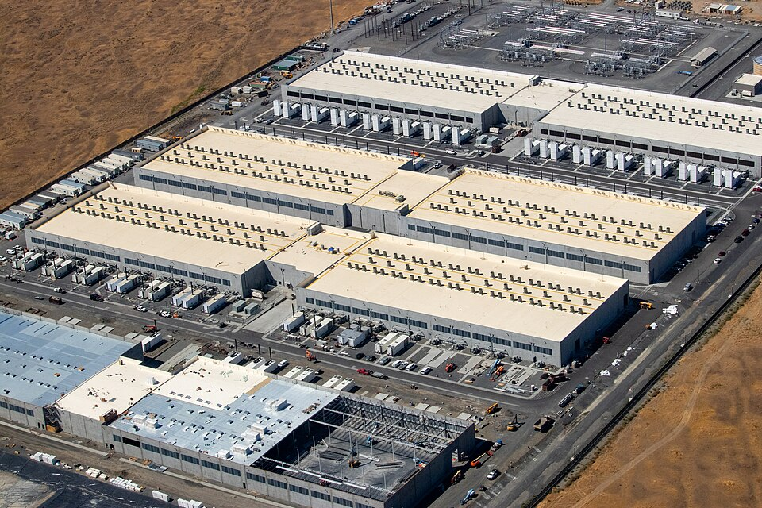
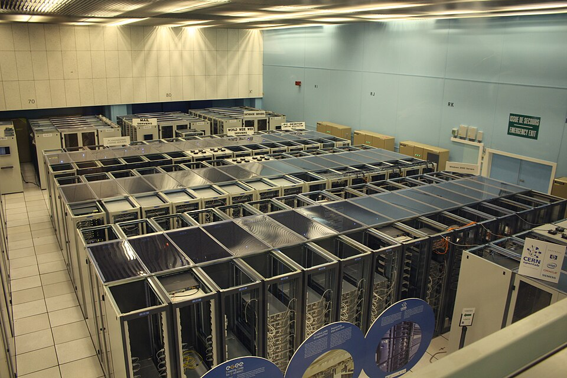
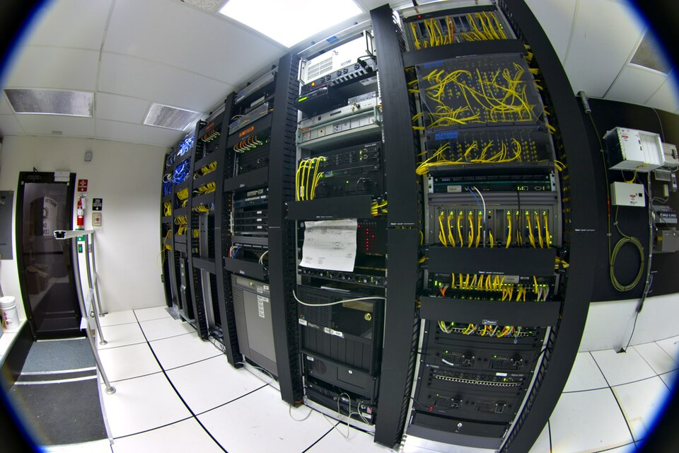
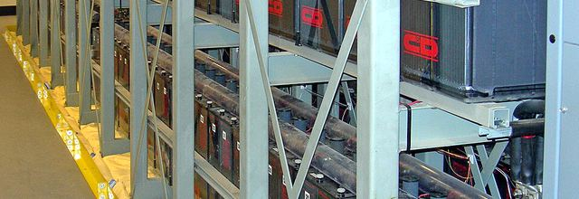
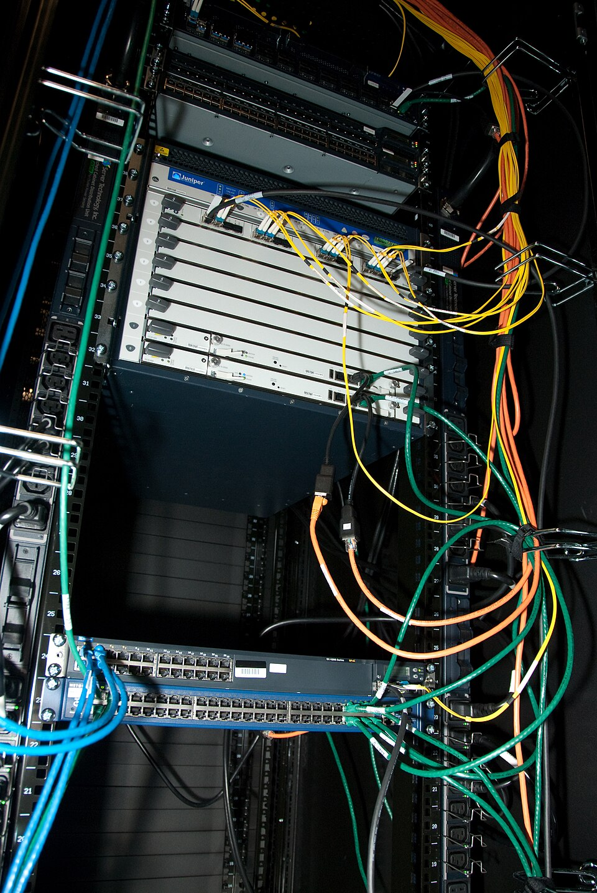
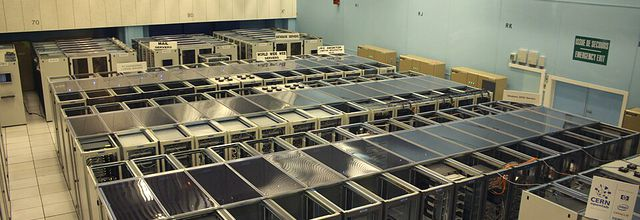
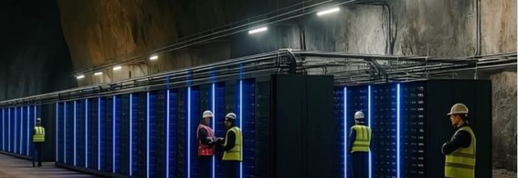
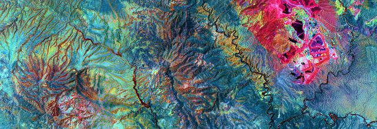
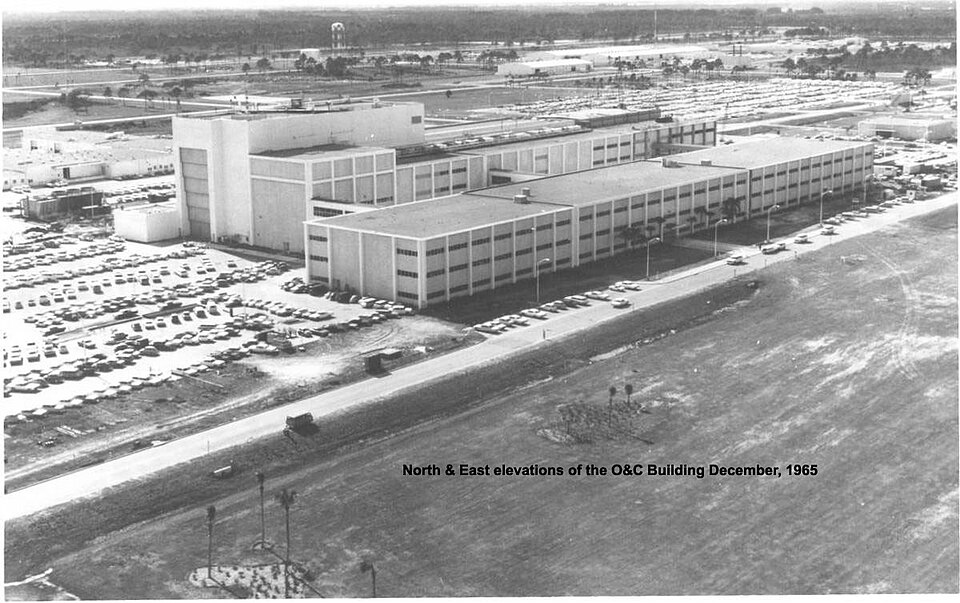
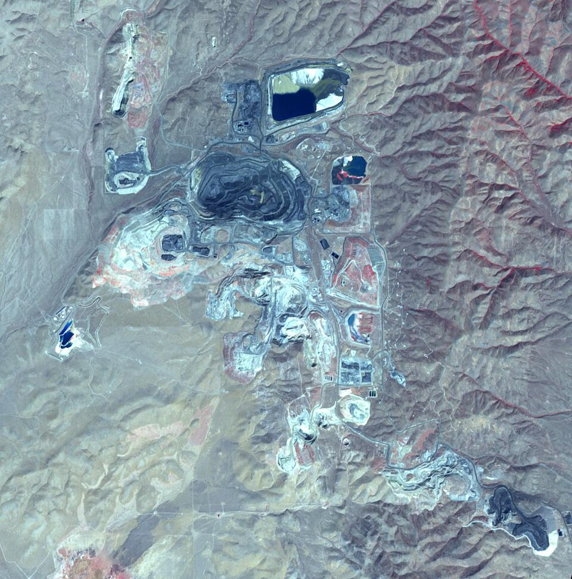
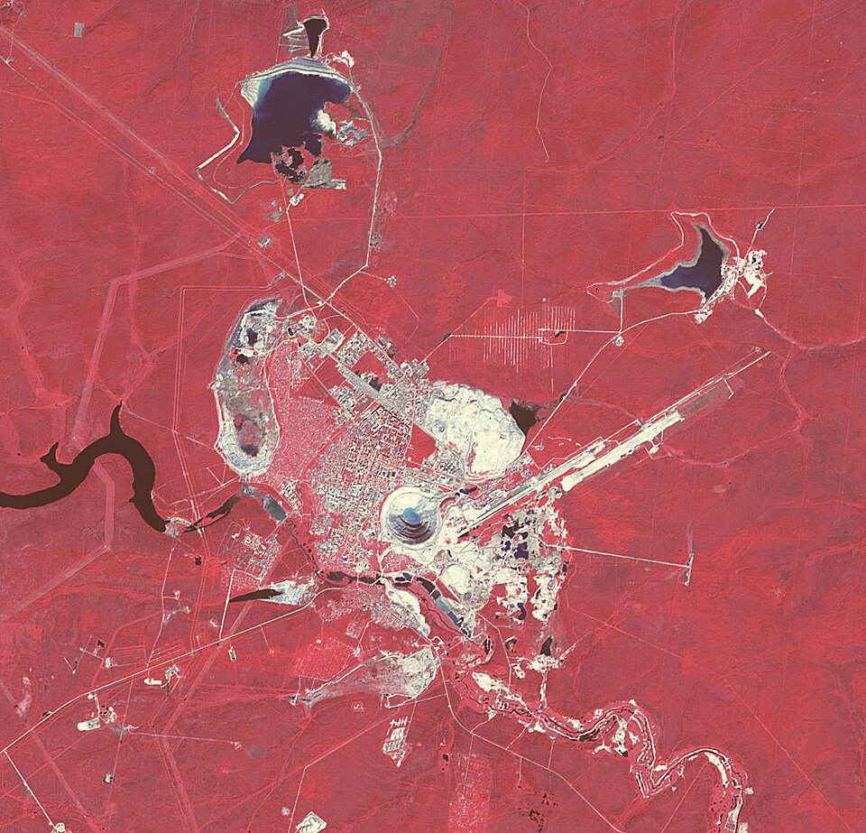
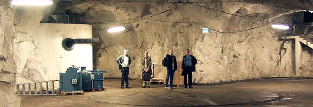
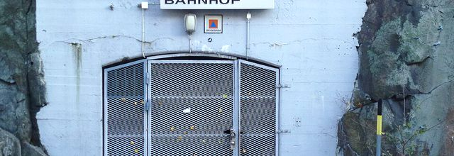
Links open external websites. Coal Controller Organisation does not endorse third-party content.

.svg)


Disclaimer: Inclusion of an agency on this list does not constitute endorsement, empanelment, or recommendation by the Coal Controller Organisation or the Ministry of Coal, Government of India. Mine owners and project proponents are advised to conduct their own due diligence process before engaging any agency.
Founder and Partner at R.I.C.H. Reality International and R.I.C.H. India Consulting Hub, with expertise in real estate and infrastructure consulting relevant to data centre development on mine land.
Researcher at the Centre for Study of Science, Technology and Policy (CSTEP), focusing on science, technology and policy intersections relevant to digital infrastructure and data centre deployment.
Disclaimer: Inclusion of an expert does not constitute endorsement, empanelment, or recommendation by the Coal Controller Organisation or the Ministry of Coal, Government of India. Users are advised to independently verify credentials and suitability before engaging any individual.